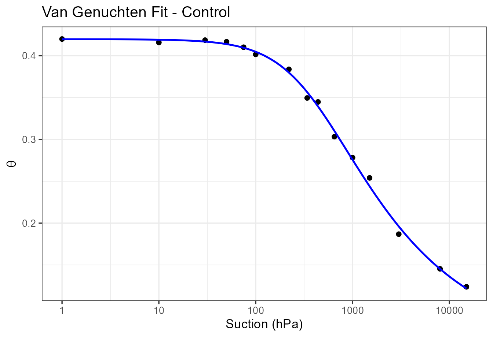
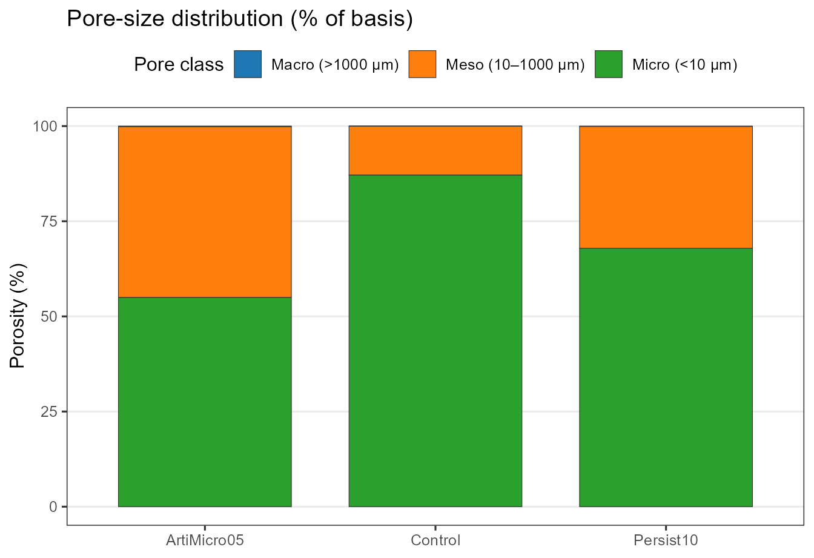
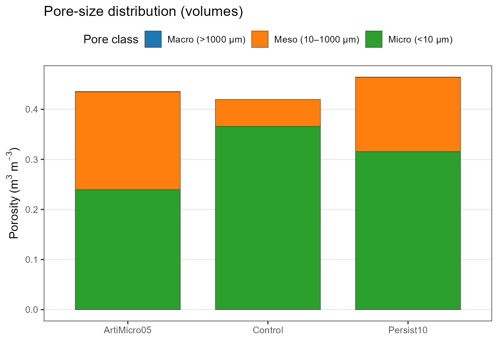
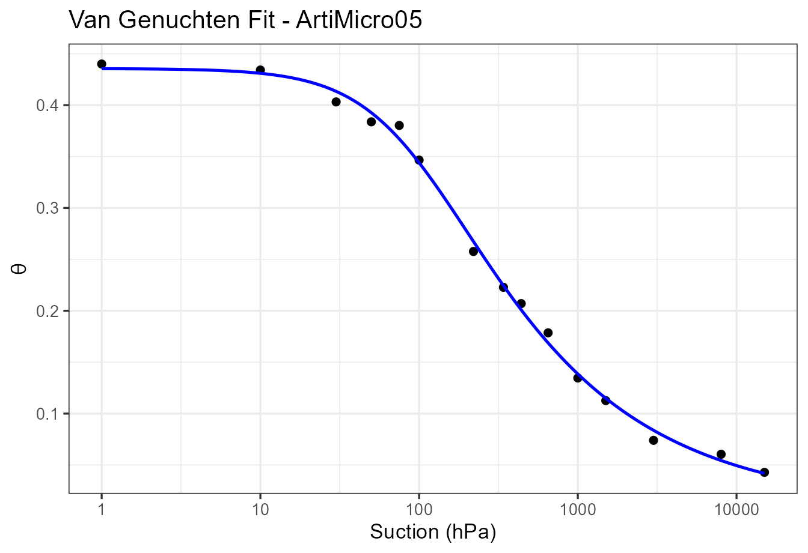

vignette.RmdSoilHydro is an R package for fitting Van Genuchten water retention curves (WRC) and computing practical hydrophysical summaries used in soil physics and agronomy. The package:
We assume familiarity with basic soil physics concepts () and laboratory WRC data.
# Install from GitHub using devtools
if (!requireNamespace("devtools", quietly = TRUE)) {
install.packages("devtools")
}
devtools::install_github("egubens/SoilHydro")Requires: R ≥ 3.6; Depends on base stats and ggplot2.
Your long/tidy dataset should include at least:
Product;h (either
kPa or hPa).Pass the units of your raw suction column via
units = "kPa" or "hPa".
We model water content (with suction in kPa) as
The package uses Mualem’s linkage and fits parameters by minimizing the sum of squared errors (SSE) with L‑BFGS‑B bounds to enforce , , .
Below we simulate three treatments with “true” parameters, sample common laboratory suctions in hPa, add small noise, and run the full workflow.
library(SoilHydro)
library(ggplot2)
set.seed(42)
# 1) "True" parameters (kPa units)
true_params <- list(
Control = list(theta_r = 0.05, theta_s = 0.42, alpha = 0.030, n = 1.42),
ArtiMicro05 = list(theta_r = 0.02, theta_s = 0.44, alpha = 0.100, n = 1.55),
Persist10 = list(theta_r = 0.04, theta_s = 0.46, alpha = 0.060, n = 1.50)
)
# 2) Suction points (hPa)
hPa_grid <- c(1, 10, 30, 50, 75, 100, 220, 340, 440, 650, 1000, 1500, 3000, 8000, 15000)
# 3) Generate theta(h) + noise
sim_rows <- lapply(names(true_params), function(id){
p <- true_params[[id]]
h_kPa <- hPa_grid / 10
theta <- SoilHydro::vg_fun_kPa(h_kPa, p$theta_r, p$theta_s, p$alpha, p$n)
theta_noisy <- pmin(p$theta_s, pmax(0, theta + rnorm(length(theta), sd = 0.006)))
data.frame(Product = id, hPa = hPa_grid, theta = theta_noisy, stringsAsFactors = FALSE)
})
df <- do.call(rbind, sim_rows)
head(df, 8)
#> Product hPa theta
#> 1 Control 1 0.4200000
#> 2 Control 10 0.4158624
#> 3 Control 30 0.4186704
#> 4 Control 50 0.4167058
#> 5 Control 75 0.4102049
#> 6 Control 100 0.4016040
#> 7 Control 220 0.3838196
#> 8 Control 340 0.3495873
fits <- vg_fit_optim(
data = df,
id = "Product",
theta = "theta",
h = "hPa",
units = "hPa"
)
fits
#> Product .fit_ok theta_r theta_s alpha n m
#> 1 ArtiMicro05 TRUE 0.008167154 0.4355989 0.10356957 1.503640 0.3349473
#> 2 Control TRUE 0.047765797 0.4197565 0.02607172 1.439453 0.3052918
#> 3 Persist10 TRUE 0.018931801 0.4644555 0.07194008 1.429538 0.3004731
#> R2 RMSE
#> 1 0.9972856 0.007207470
#> 2 0.9975671 0.004956925
#> 3 0.9989176 0.004382912
plots <- plot_vg_fits(
data = df,
params_df = fits,
id = "Product",
theta = "theta",
h = "hPa",
units = "hPa",
log_x = TRUE
)
plots[["Control"]]
We define FC at 10 kPa and PWP at 1500 kPa. AWC is .
wp <- vg_water_points(fits, id_col = "Product", fc_kPa = 10, pwp_kPa = 1500)
wp
#> Product theta_fc theta_pwp AWC
#> 1 ArtiMicro05 0.3440217 0.04183028 0.3021914
#> 2 Control 0.4047486 0.12191947 0.2828291
#> 3 Persist10 0.4040153 0.07855736 0.3254580By capillarity, the characteristic suction (kPa) associated with a pore of diameter (µm) is approximated by
with surface tension (N m^{-1}) and contact angle . SoilHydro defaults to at 20 °C and . Using cutoffs and , the package partitions porosity into:
By default, residual water is included within “micro” so that macro+meso+micro .
psd <- vg_pore_classes(
fits,
id_col = "Product",
percent_basis = "theta_s",
include_residual_in_micro = TRUE
)
psd
#> Product theta_macro theta_meso theta_micro pct_macro pct_meso pct_micro
#> 1 ArtiMicro05 0.0007378153 0.19544165 0.2394194 0.16937953 44.86735 54.96327
#> 2 Control 0.0001008961 0.05396178 0.3656938 0.02403681 12.85550 87.12047
#> 3 Persist10 0.0005316091 0.14850556 0.3154183 0.11445857 31.97412 67.91142
#> theta_r theta_s
#> 1 0.008167154 0.4355989
#> 2 0.047765797 0.4197565
#> 3 0.018931801 0.4644555
g_pct <- plot_pore_classes_percent(psd, id_col = "Product")
g_vol <- plot_pore_classes_volume(psd, id_col = "Product")
g_pct
g_vol
units = "kPa" or "hPa"
matching your input column.vg_fit_optim() performs bounded least‑squares with
sensible starting values per group. Returned diagnostics include
R² and RMSE computed on the fitting
data.
Tips for robust fitting
.fit_ok = FALSE), check
units, outliers, and monotonicity of
.Use vg_predict() to predict
on custom suction grids (kPa or hPa). This is useful for report tables
and smooth plotting with fixed ranges.
# Predict on a custom kPa grid
grid_kPa <- c(seq(0, 50, by=1), seq(55, 100, by=5), seq(110, 1600, by=10))
pred <- vg_predict(fits, id_col = "Product", new_h = grid_kPa, units = "kPa")
head(pred, 10)
#> ID h units theta
#> 1 ArtiMicro05 0 kPa 0.4355989
#> 2 ArtiMicro05 1 kPa 0.4309680
#> 3 ArtiMicro05 2 kPa 0.4229618
#> 4 ArtiMicro05 3 kPa 0.4134170
#> 5 ArtiMicro05 4 kPa 0.4031521
#> 6 ArtiMicro05 5 kPa 0.3926578
#> 7 ArtiMicro05 6 kPa 0.3822386
#> 8 ArtiMicro05 7 kPa 0.3720805
#> 9 ArtiMicro05 8 kPa 0.3622920
#> 10 ArtiMicro05 9 kPa 0.3529308FC at 10 kPa. PWP at 1500 kPa is conventional for many crops. AWC helps compare treatments but should be complemented by conductivity/retention hysteresis where available.
The PSD aggregation condenses the
curve into interpretable buckets. You can change the cutoffs via
d_micro_um and d_macro_um, choose percentage
basis ("theta_s" vs
"available" = theta_s - theta_r), and decide whether to
include
in micro.
psd2 <- vg_pore_classes(
fits, id_col = "Product",
d_micro_um = 5, d_macro_um = 500,
percent_basis = "available",
include_residual_in_micro = FALSE,
return_residual = TRUE
)
head(psd2)
#> Product theta_macro theta_meso theta_micro pct_macro pct_meso pct_micro
#> 1 ArtiMicro05 0.0020790305 0.2561696 0.1691831 0.48640062 59.93229 39.58131
#> 2 Control 0.0002733771 0.1007785 0.2709388 0.07349031 27.09168 72.83483
#> 3 Persist10 0.0014257198 0.2119398 0.2321582 0.32000990 47.57093 52.10906
#> theta_r theta_s theta_residual pct_residual
#> 1 0.008167154 0.4355989 0.008167154 1.910751
#> 2 0.047765797 0.4197565 0.047765797 12.840590
#> 3 0.018931801 0.4644555 0.018931801 4.249337plot_vg_fits(..., log_x = TRUE) draws one
ggplot per ID with observed points and a fitted
curve.plot_pore_classes_percent() and
plot_pore_classes_volume() produce stacked bars with
optional horizontal layout (horiz = TRUE).
# Show two IDs side-by-side using patchwork if desired (not required by SoilHydro)
# install.packages("patchwork") # if needed
# library(patchwork)
# plots[["Control"]] + plots[["Persist10"]]
plots[[2]]
The package includes a Shiny app that lets users:
To run the app, ensure your SoilHydro functions are installed/available, then source and launch the app:
SoilHydro_App()lower/upper in
vg_fit_optim().vg_fit_optim(data, id, theta, h, units) → per‑group
parameters + diagnostics.vg_predict(params_df, id_col, new_h, units, filter_id)
→
table.vg_water_points(params_df, id_col, fc_kPa=10, pwp_kPa=1500)
→
.vg_pore_classes(params_df, id_col, d_micro_um=10, d_macro_um=1000, percent_basis=c("theta_s","available"), include_residual_in_micro=TRUE, return_residual=FALSE)
→ macro/meso/micro volumes & %.plot_vg_fits(data, params_df, id, theta, h, units, log_x=TRUE)
→ WRC plots by ID.plot_pore_classes_percent(psd_df, id_col, horiz=FALSE)
→ stacked % bars.plot_pore_classes_volume(psd_df, id_col, horiz=FALSE) →
stacked volume bars.For manuscripts, record R and package versions and set a seed for any
simulation steps (as done above). Export figures with explicit sizes
(e.g., ggsave(..., width=8, height=5, units='cm', dpi=300))
when preparing journal‑ready graphics.